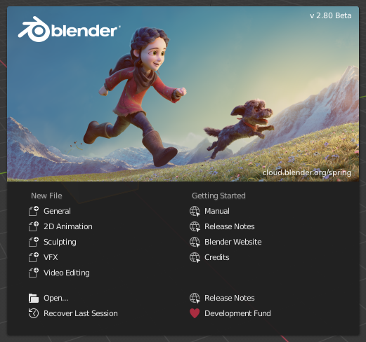

启动画面¶
启动Blender过程中，启动画面出现在窗口中间，其中包含了帮助选项链接和最近打开的blend文件，详情见下文。

Blender启动画面。¶
单击启动画面外任意位置(但必须位于Blender窗口内)，或者按 Esc ， 可以关闭启动画面并启动新项目。启动画面将消失，并显示默认窗口布局。
在顶栏的Blender图标上单击，并选择 启动画面(Splash Screen) 重新打开启动画面。
- 信息区域
The upper part of the splash screen contains the splash image with the Blender version in the top right.
- 交互区域
启动画面的下半部分是交互区域。
Note
当首次启动Blender时，交互区域包含 快速设置。